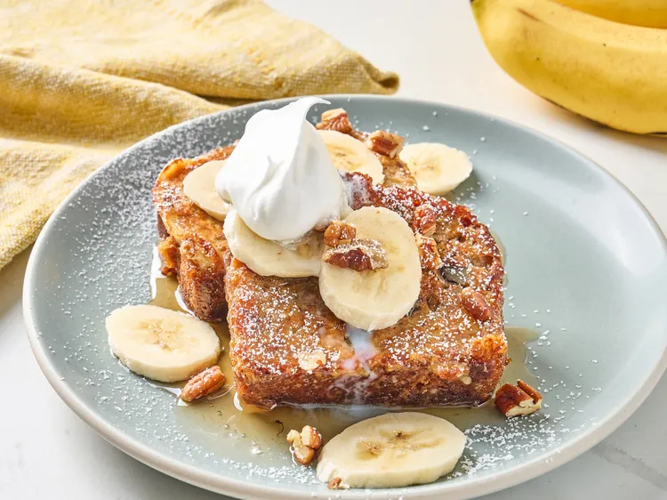

Banana Bread French Toast recipe
Prep time: 5 mins
Cook times 10 mins
Total time: 15 mins
Servings: 4 to 6
Ingredients
- 1 loaf banana bread
- 3 large eggs
- 1 cup milk
- 1/4 cup all-purpose flour
- 1 tablespoon ground cinnamon
- 1 tablespoon white sugar
- 1 teaspoon vanilla bean extract
- 1 pinch salt
- 2 tablespoons unsalted butter
- 2 bananas, sliced, or more as needed
- 1/4 cup chopped pecans
- 1/4 cup syrup
- 1/4 cup confectioner's sugar
Directions
- Step 1
Slice banana bread loaf into 3/4- to 1-inch thick slices. Whisk eggs, milk, flour,
cinnamon, sugar, vanilla extract, and salt together in a bowl.
- Step 2
Dip each banana bread slice into egg mixture; alternately, place slices into a
baking dish, pour egg mixture over the top, and let sit for 5 to 10 minutes.
- Step 3
Heat 1 tablespoon butter in a large skillet over medium heat. Toast 3 to 4 slices
in the skillet until golden brown, 3 to 4 minutes per side; repeat with remaining
butter and bread slices.
- Step 4
Serve immediately with fresh slices of banana, chopped pecans, syrup, and a
sprinkle of confectioners sugar.

back to the main menu